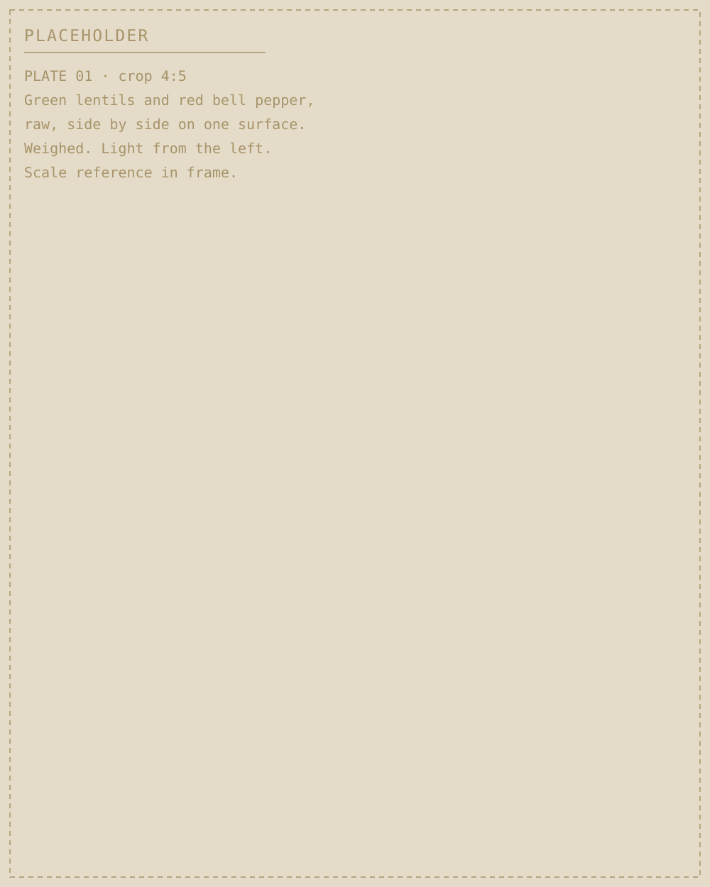
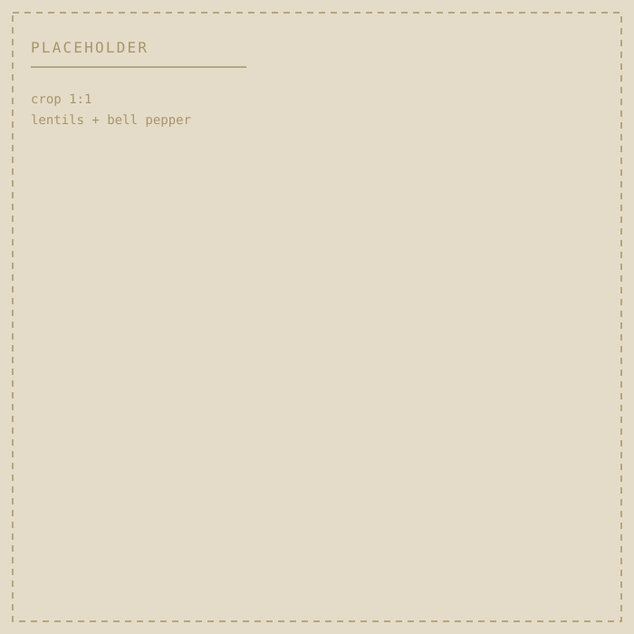
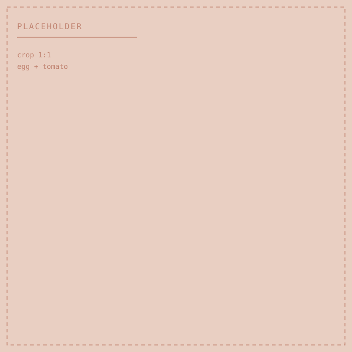
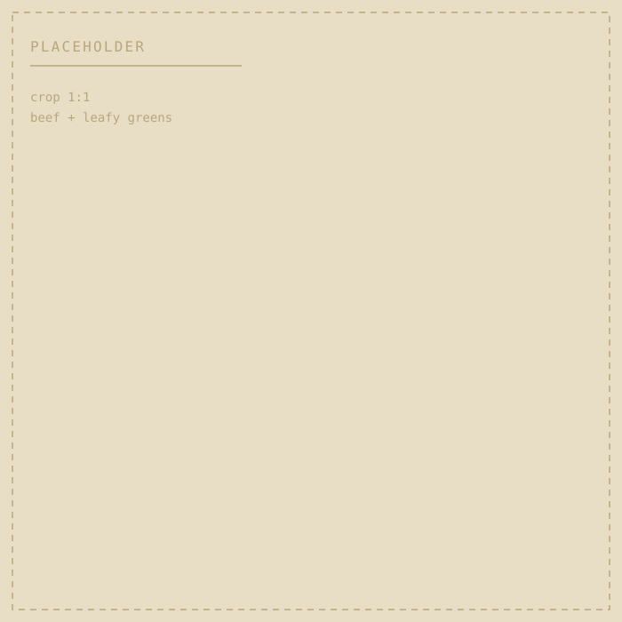
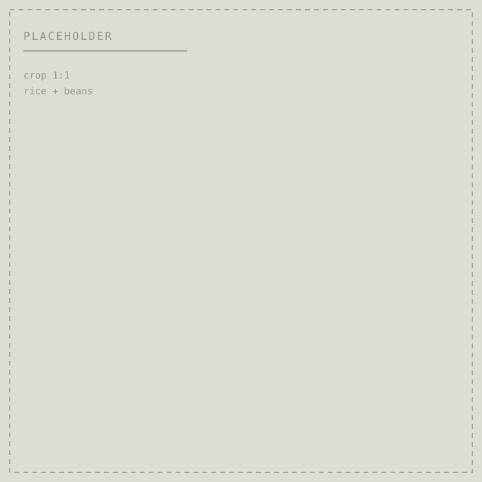
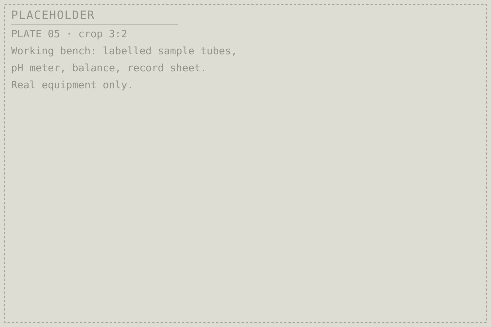
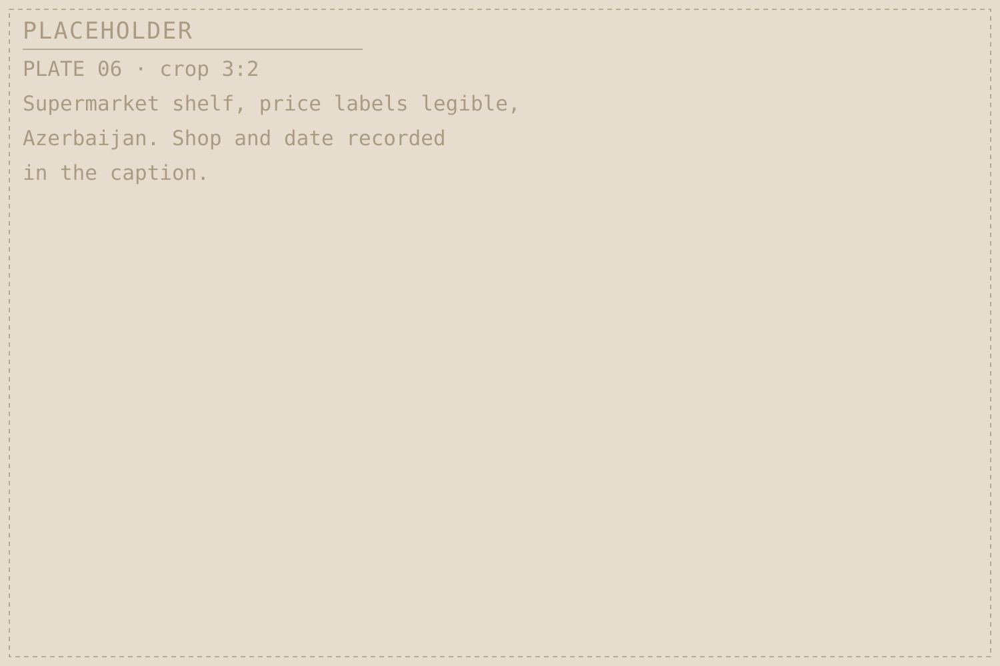
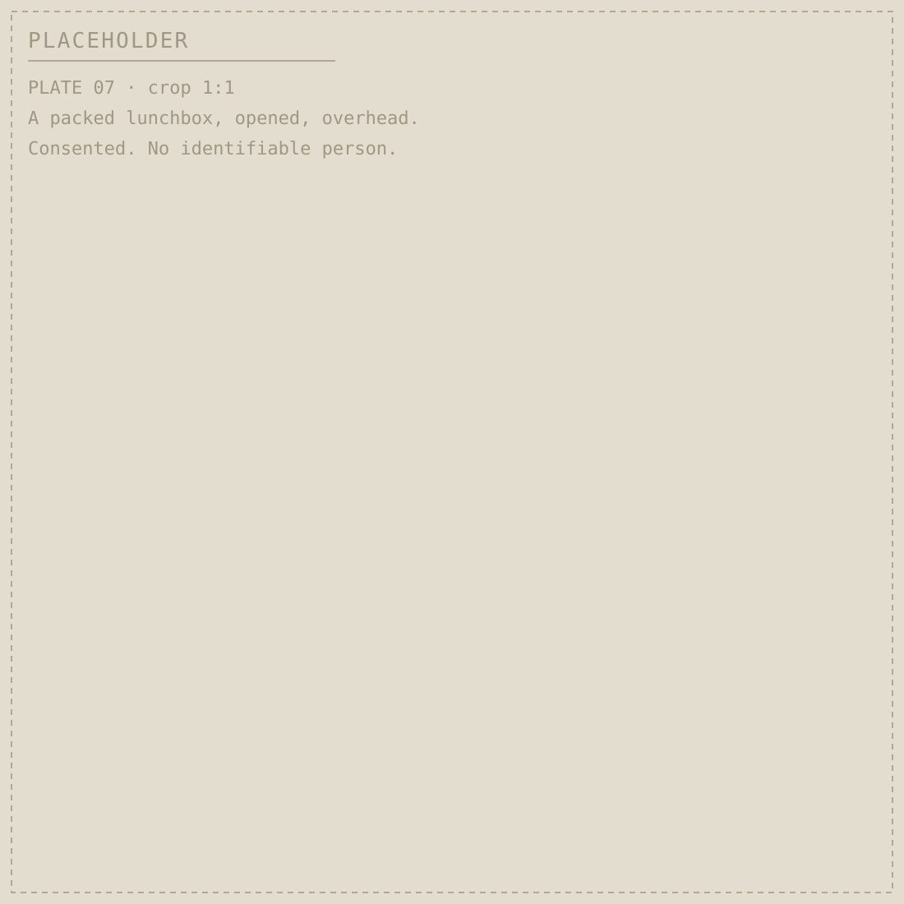

A student food-science project · Azerbaijan
What changes when we eat them together?

Food is usually described one ingredient at a time — iron in lentils, vitamin C in peppers. Meals are not like that. NUTRIX LAB is a student project that takes pairs of everyday foods into a laboratory, measures what happens chemically when they meet, and builds an open record of the results.
The point of that record is practical. It feeds into the design of school lunchboxes in Azerbaijan that are affordable, made from food that is actually in the shops, and — the part that decides everything else — actually eaten.
This site publishes a measurement only after it has been made and checked. None are published here yet. Where a page shows no result, that means nothing has been published here — it is not a statement about work the team may already have under way.
Explore a pairing
Every pairing has its own page: one question, the ingredients and how they are prepared, what published research already shows, and what this project plans to measure. Those three things are kept visibly separate.
-

Mərci + bolqar bibəri Lentils + red bell pepper Does bell pepper change how much iron is released from lentils during digestion? Open -

Yumurta + pomidor Egg + tomato How acidic does the mixture become, and does that depend on whether the tomato is cooked? Page in preparation -

Mal əti + göyərti Beef + leafy greens Two different forms of iron in one dish. Does measuring them together differ from measuring each alone? Page in preparation -

Düyü + lobya Rice + beans How fast does rice starch break down in the digestion model when beans are in the same meal? Page in preparation
The full plan covers roughly 25–30 common foods and 100–150 standardised combinations. Pairings are added to this index as their pages are written.
The question behind the measurements
What we investigate, and what a laboratory can honestly tell us
Two foods put together are a new chemical environment. Acid from one can change what dissolves out of the other. Fibre and plant compounds can hold minerals so tightly they stay bound. Heat applied to one component can destroy a vitamin that mattered to the pair.
NUTRIX LAB works through a fixed set of measurements, applied the same way to every combination so the results can be compared with each other and repeated by someone else. Where it is relevant, the same pairing is measured raw, boiled and baked, because preparation is part of the combination rather than a detail around it.
Each measurement below has a matching limit. Those limits are not small print — they decide what the project is allowed to claim.

- Acidity (pH)
-
Whether combining two foods changes how acidic the mixture is. Acidity affects which minerals dissolve and whether some vitamins survive.
Limit. A pH reading describes the food in the beaker. It says nothing about the person eating it.
- Simulated digestion
-
A standardised laboratory model that exposes food to the enzymes, acidity and timing of the mouth, stomach and small intestine, so that every combination meets the same conditions.
Limit. The model is a deliberate, controlled approximation. It is not a human digestive system.
- Iron bioaccessibility
-
How much of the iron in a combination is released into solution during simulated digestion — the fraction that would, in principle, be available to be taken up.
Limit. Released is not absorbed. An accessible fraction in a flask is not an absorbed dose in a body.
- Starch breakdown rate
-
How quickly starch is broken into sugars in the model, compared between combinations and between preparation methods.
Limit. Used only as a laboratory proxy. It is not a blood-sugar measurement and will not be described as one.
- Antioxidant activity
-
A standard assay used to compare selected fruit and vegetable combinations against each other under identical conditions.
Limit. An assay compares samples in a tube. It does not establish an effect in a person.
- Cost and availability
-
Recorded alongside the chemistry: price in manat, with the shop and the date of pricing, plus whether the ingredient is in season and locally produced.
Limit. Prices move. Every figure published here will carry the date it was collected.
A score, only once it can be explained
The project plans a Food Interaction Score that combines measured results with cost, availability and sustainability. Nothing is shown on this site until the formula, the weightings and the inputs behind it are published alongside it. A number nobody can take apart is not a result.

From the bench to the lunchbox
A result is only useful if the food is on the shelf
A combination that measures well and cannot be bought, carried or afforded has not solved anything. So the second half of the project is a survey rather than an experiment.
The Azerbaijan School Lunch Atlas is planned as a record of what is genuinely available to schoolchildren here: what the shops stock near schools, what it costs in manat, when each ingredient is in season, which are produced locally, what survives a morning in a lunchbox, and how much of it comes home again uneaten.
Price points as a design constraint
The project sets itself three budgets to design against. These are targets the team has chosen in order to keep the work honest about affordability — not menus that have been built, costed or tested.
- 3 AZN per lunch
- 5 AZN per lunch
- 7 AZN per lunch
No lunchbox has been priced on this site. Costs will appear only once they have been collected from named shops on a recorded date.

LunchBox AI
The intended end point of the dataset: enter an age, a budget, the length of the school day, allergies and the foods available, and the program searches combinations from the project's own measurements — balancing nutritional quality and cost against what students actually finish rather than leave.
It does not exist yet. This site will not display sample recommendations before the tool is built and validated, because a demonstration output is indistinguishable from a real one once it is on a screen.
Method, people and status
The project is designed to be reproduced. The protocol, the anonymised dataset, the scoring method and the code are all intended for publication, so another school can run the same experiments on their own local foods and add comparable results.
Planned outputs
- Laboratory study across 100–150 standardised food combinations
- An original food-interaction dataset
- An interactive food-interaction map
- The Food Interaction Score, published with its formula
- LunchBox AI
- The Azerbaijan School Lunch Atlas
- A school pilot measuring plate waste, cost and acceptance
- A food-waste estimator from standardised lunch photographs
- A research paper with methods, results, limitations and statistics
- Open protocol, code and anonymised data
Listed as planned. Individual progress is confirmed by the project team and will be marked here output by output as it is.
What this project will not claim
Laboratory measurements on food are not measurements on people. No result published here will be presented as a health, medical or physiological effect in humans on the strength of in-vitro work alone.
Any research involving human participants — including the school pilot — requires ethical oversight, informed consent and an appropriate research partner before it begins.
Contributors
To be listed. NUTRIX LAB is student-led; names, roles and institution will be published here once the people involved have agreed to be named.
We do not list contributors, supervisors or partner organisations who have not confirmed their involvement.
Reproduce this
Once the protocol is published, another school can run these combinations on the foods in their own shops and contribute comparable results. That is the long-term point: not one lab's dataset, but a shared one.